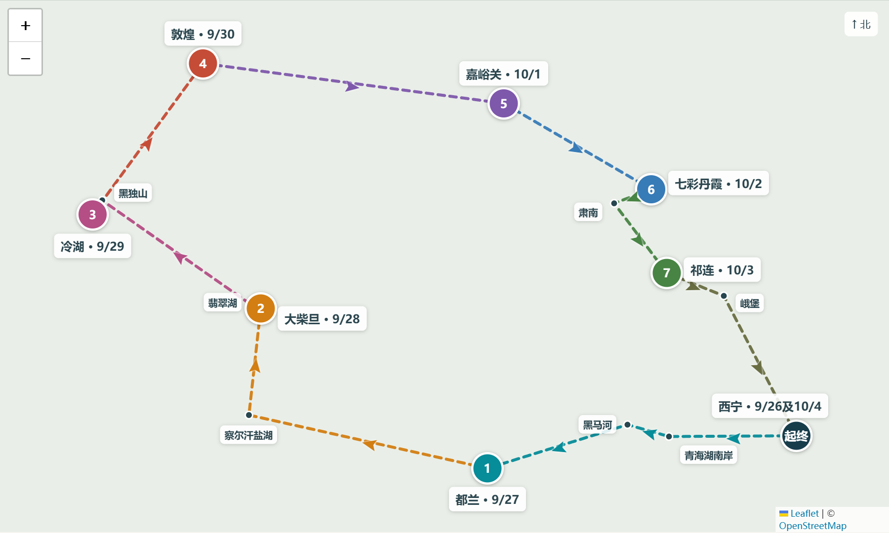

Qinghai · Gansu Road Trip
青甘
大环线
2026.09.26—10.05
两人自驾 · 高尔夫1.5T
两人自驾 · 高尔夫1.5T
西宁 → 青海湖 → 察尔汗 → 大柴旦
→ 黑独山 → 冷湖 → 敦煌 → 嘉峪关
→ 七彩丹霞 → 肃南 → 祁连 → 西宁
→ 黑独山 → 冷湖 → 敦煌 → 嘉峪关
→ 七彩丹霞 → 肃南 → 祁连 → 西宁
9晚住宿
8天自驾
¥1.4万两人预算
左右滑动或点击下方按钮翻页
左右滑动或点击下方按钮翻页

入住后补给，适应海拔。
住：海友酒店（西宁火车站店）¥216.51
08:30出发；日月山方向、G109、江西沟、黑马河。驾驶约6–7小时。
住：都兰锦泰宾馆 ¥144
07:30出发；盐湖3–4小时，驾驶约5–6小时。
住：大柴旦锦泰酒店 ¥197
翡翠湖2–2.5小时，黑独山2.5–3小时；先确认末班景交。
住：冷湖西海酒店 ¥215
06:30出发；驾驶预留4.5–5.5小时。14:00预约场，两人¥476已付。
住：敦煌星池酒店 ¥210.33
驾驶约4–5小时；关城可选。若去鸣沙山，安排早场。
住：IU酒店（嘉峪关人民商城店）¥222
驾驶约3–3.5小时；约15:00进景区，傍晚拍照。
住：繁花小筑智能酒店 ¥233.07
08:00出发；山路约5–6小时，实际可能更久。沿途景观为主。
住：祁连穆轩农庄 ¥154.11
08:30出发；目标15:00–16:00回西宁，按合同补油还车。
住：IU酒店（西宁火车站高铁站店）¥249
硬卧返程，提前60–90分钟到站；车次以订单为准。
出发前确认冷湖早餐与供暖、敦煌停车、祁连农庄定位和热水。